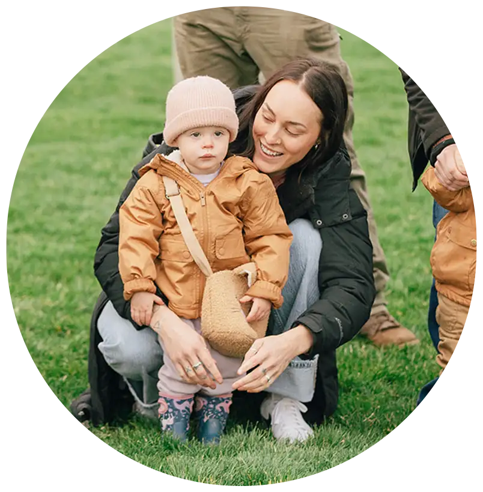
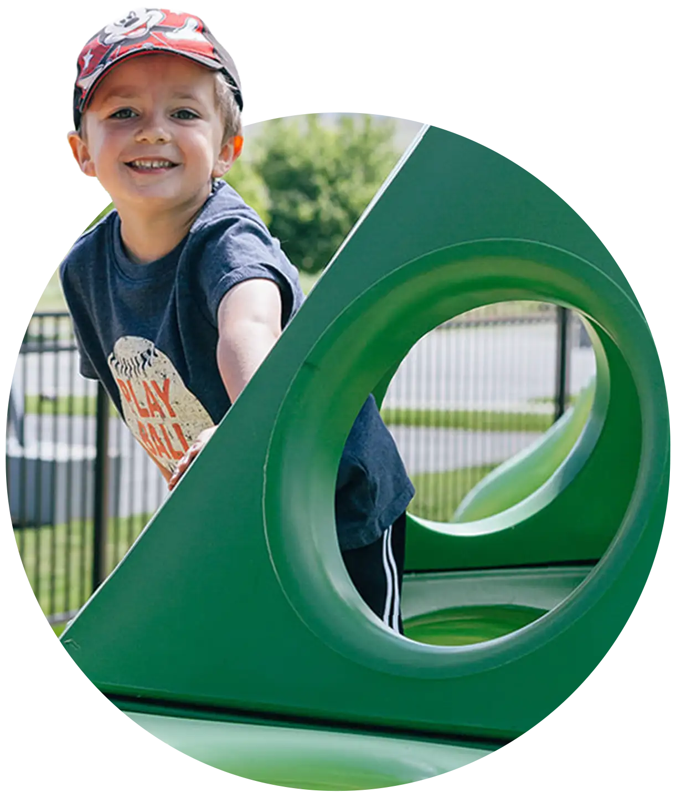
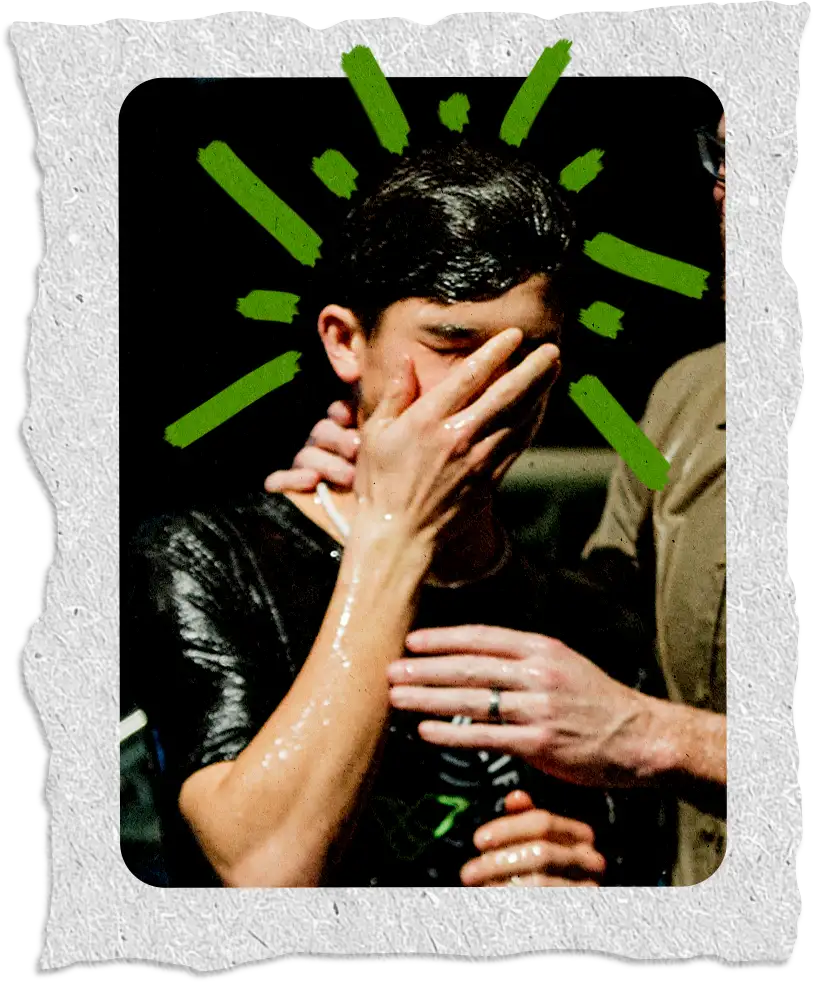
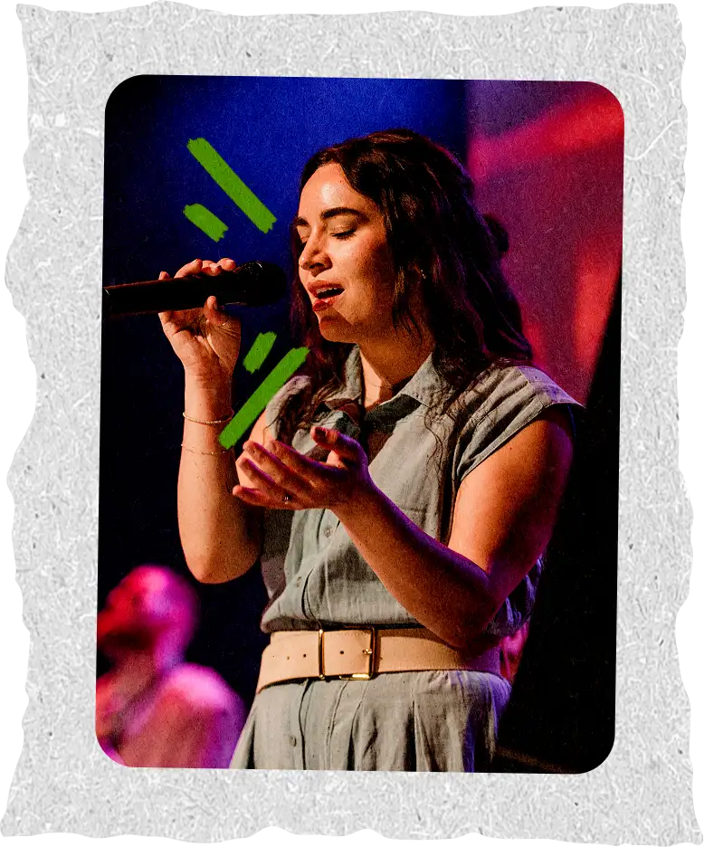
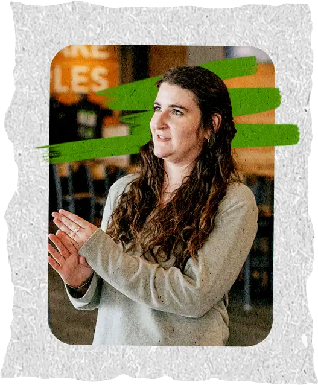
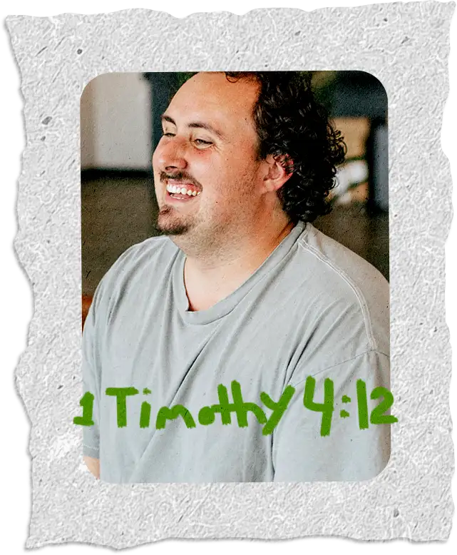

Reaching the world — One at a time
Service times Thursdays at 6:30pm Sundays at 8:00, 9:30, 11:00am & 12:30pm
Next steps
What's your next right step?
Birth through 5th grade
Safe, simple check-in and a team that can't wait to meet your family.


Middle school & high school
VRL Students
A place to belong, grow in Jesus and find out church is anything but boring.




What's happening
Find your place to connect
-
Aug8
Family Feast
Free dinner before the 6:30pm service. Bring lawn chairs, blankets, whatever you want.
-
May9
Men's Breakfast
Join the guys of VRL at our monthly gathering — food, and an honest conversation.
-
May9
Celebrate Recovery
Struggling with hurts, habits or hang-ups? There's a seat here for you.
-
May12
GriefShare
A supportive group for understanding and working through grief at your own pace.
-
May14
DivorceCare
Divorce is one of life's most painful experiences. You don't have to do it alone.
-
Aug22
Night of Worship
An evening of nothing but worship and prayer. Come as you are, stay as long as you like.